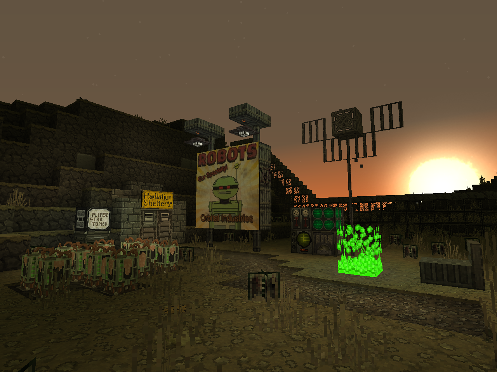

Main Page

Welcome to the Lore & Setting documentation of "Last Days", post-apocalyptic atompunk resource pack in friendly Slightly HD 32x resolution!
The goal of Last Days resource pack is to create game changing, post-apocalyptic setting, taking full advantage of Minecraft and Optifine mechanics.
To immerse yourself in the setting, turn on the language "LAST DAYS (The Wastes)" in the game settings.
WARNING! For full functionality, this pack requires Optifine! Download it
here.
Credits
Created by Doku, expanded by History, Croco15, HalphPrice and Discord community.
Current pack leader – DerekSmith.
Community pack leader – Gwolfski.
Main lore & setting by Gwolfski, expanded by DmitryWS.